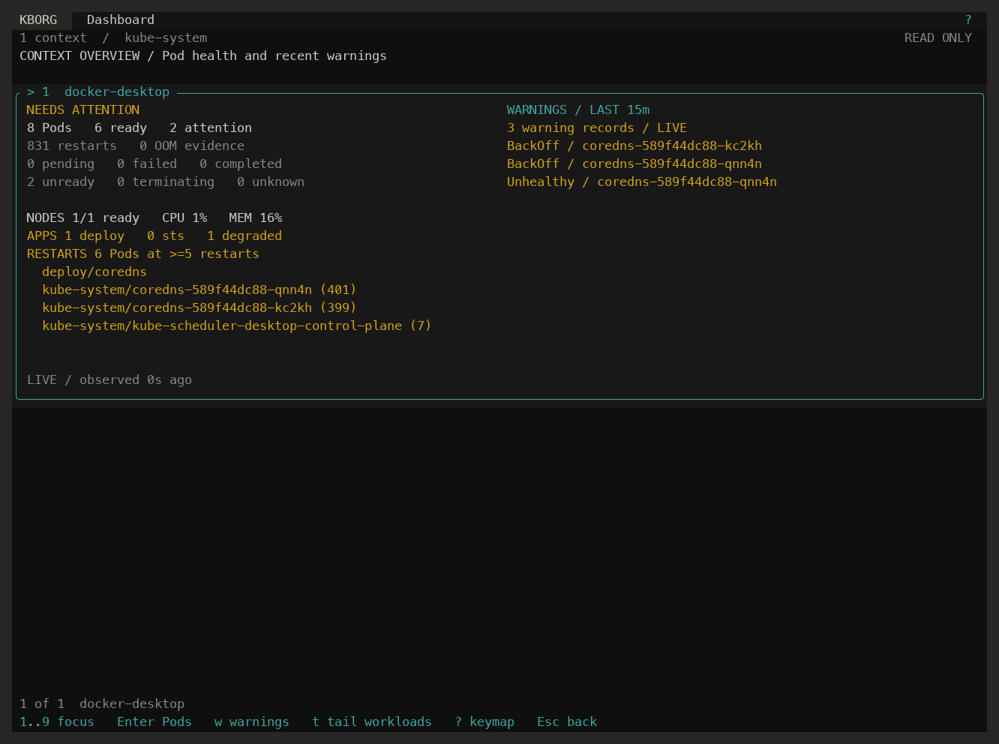
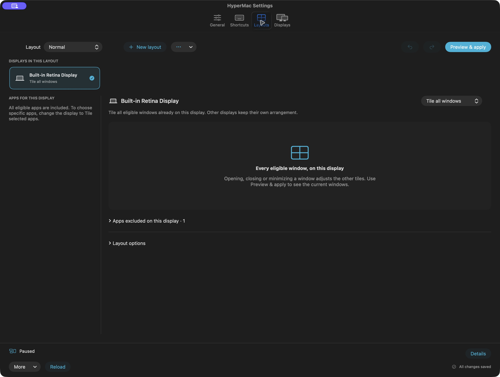
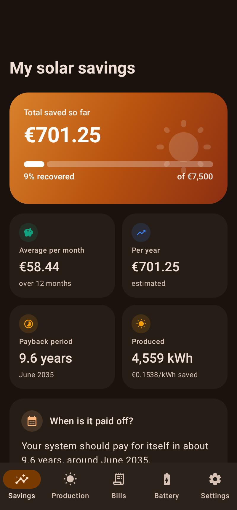
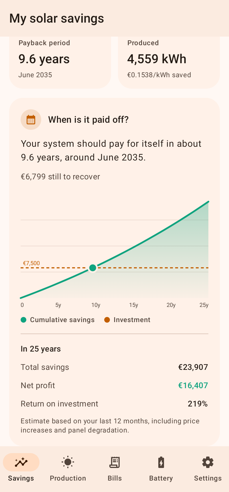

Infrastructure tooling
KBorg
A Kubernetes terminal workspace for working across clusters, with dashboards, logs, metrics and reviewed operational workflows.
View on GitHubDevOps & Cloud Engineer
I design, automate and operate cloud infrastructure, platforms and CI/CD pipelines. My background is in software engineering.
View my work
A Kubernetes terminal workspace for working across clusters, with dashboards, logs, metrics and reviewed operational workflows.
View on GitHub
A native macOS window manager that automatically tiles windows, saves per-display layouts and offers customisable keyboard shortcuts. Built for Apple Silicon with SwiftUI. Currently available as a development preview.
View on GitHub

An Android app that turns electricity bills and solar production into monthly savings and a 25-year payback projection. It reads bills and inverter screenshots on-device and can optionally sync with DeyeCloud.
View on GitHubAbout
I’m a cloud and DevOps-focused software engineer with 12+ years of experience across backend development, cloud infrastructure and delivery automation.
Since February 2026, I’ve been a DevOps Engineer at Critical TechWorks, as part of the Orbit Core AWS team, helping manage the AWS cloud infrastructure supporting connected-vehicle services for BMW, MINI and Rolls-Royce. I work with Kubernetes and Terraform. I joined the company in October 2018, with an earlier software development role spanning automotive and electric-vehicle charging services.
My toolkit brings together AWS and Microsoft Azure, containerised services, serverless applications, Infrastructure as Code and CI/CD with GitHub Actions.
I enjoy turning complex problems into clear, practical solutions. Automation helps teams deliver consistently.
More about my backgroundApplication and infrastructure experience, brought together to work through complex challenges.
Repeatable infrastructure and delivery workflows, with less manual work between code and production.
From backend services and APIs to containers, cloud resources and deployment workflows.
A foundation in software development, with ongoing exploration through technical training and personal projects.
Orbit Core AWS · Connected-vehicle cloud platform
Critical TechWorks
Contribute to the management and operation of AWS cloud infrastructure supporting connected-vehicle services for BMW, MINI and Rolls-Royce as part of the Orbit Core AWS team.
Support BMW Group’s Orbit cloud platform, built on Amazon Elastic Kubernetes Service (EKS), which provides shared networking, logging and scaling capabilities for connected-vehicle microservices.
Use Kubernetes and Terraform to support infrastructure operations, automation and consistent cloud provisioning.
Developed automotive and electric-vehicle charging services with Node.js microservices on Azure, containerised delivery with Kubernetes, Docker and Helm, and AWS serverless applications provisioned with CloudFormation.
Built Python Lambda functions integrated with API Gateway and DynamoDB, alongside React front-end components.
Intelligent at-home electric-vehicle charging in Europe (2022).
LTPLabs
Owned backend delivery across client projects, building Python/Django applications, managing AWS cloud infrastructure and contributing to Vue.js front-end development.
MOG Technologies
Delivered product features and custom plugins using JavaScript, Backbone.js, Ractive.js, Node.js, C#/.NET MVC and MongoDB. Implemented front-end unit tests with Jasmine and Karma.
Webcomum Consultoria
Built web applications and API integrations using PHP, JavaScript, AngularJS, Node.js, MySQL and MongoDB. Created responsive interfaces with Bootstrap and CSS/SASS and applied technical SEO practices.
Education
Specialisation Course in Technological Development of Multimedia Products · 2011–2014
Cloud infrastructure & serverless applications
Containerised services & microservices
Infrastructure as Code & CI/CD
REST APIs, JSON & backend integrations
Proficient with these tools.
Contact
Have an opportunity, a project or a cloud engineering challenge in mind? I’d be happy to connect.
With your permission, Google Analytics uses cookies to measure visits and site usage. Rejecting has no effect on using this website. Privacy policy.